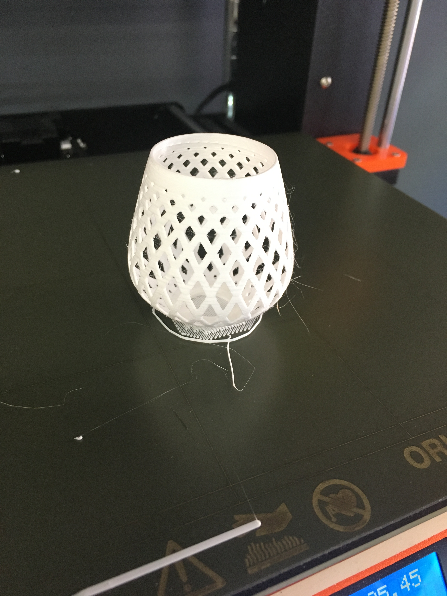
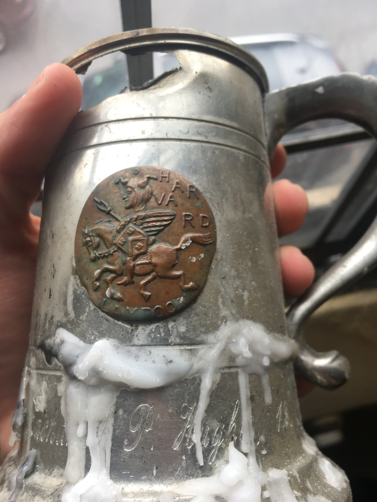
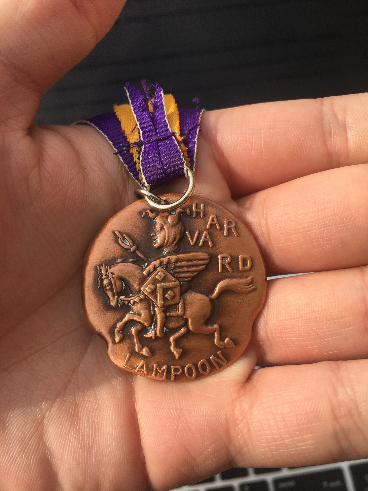
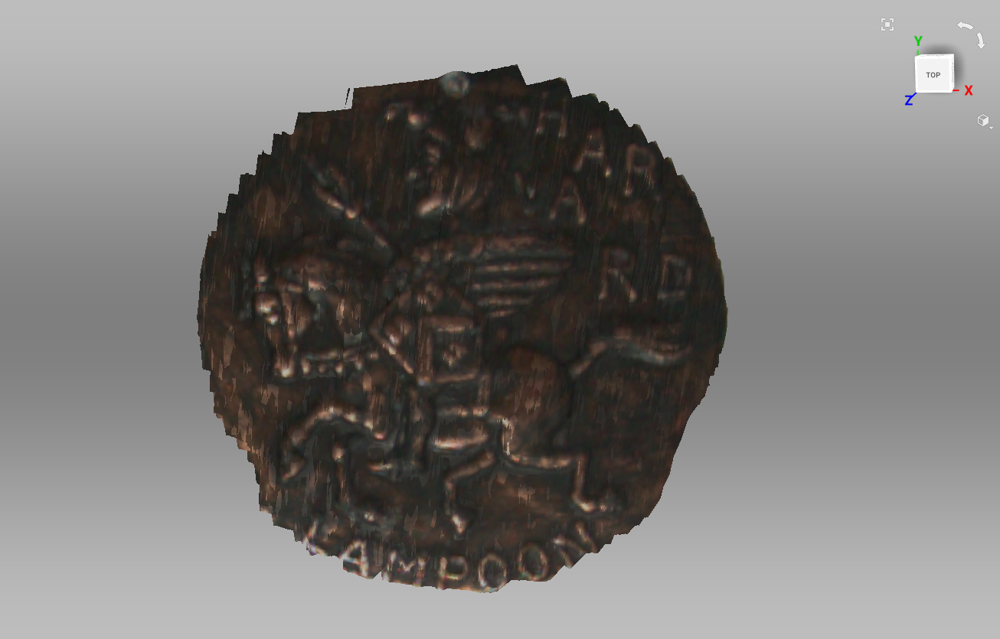
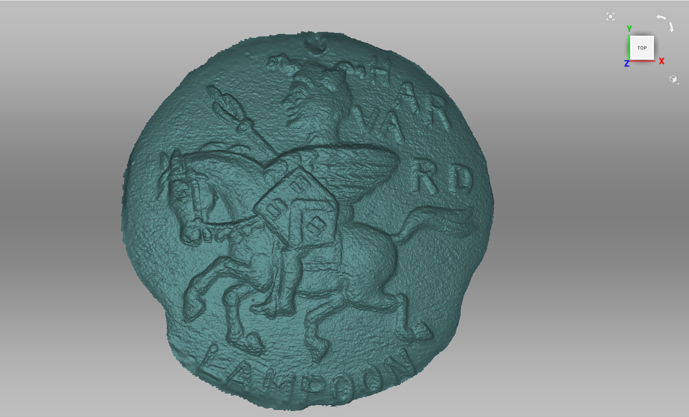
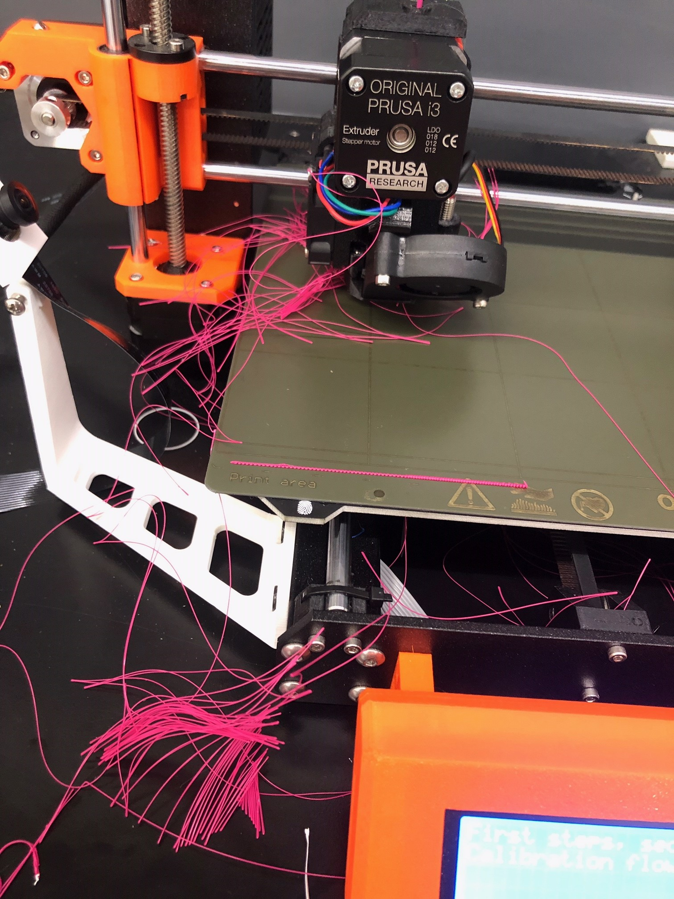

I initially made a lampshade based on the tutorial supplied to us, and it came out great:
The lampshade didn't take long to make, so I then decided to make something else that I could get some use out of. I settled on making a cigarette case, since this is something that I've wanted for a while. For my design I took inspiration from some old steins that we have at the Harvard Lampoon:
Specifically, I liked the idea of embedding the Lampoon medal into something. I chose to make a box with a sliding lid, on top of which would be my initials and a model of the Lampoon medal. I first set about trying to scan the Lampoon medal:
This was exceedingly difficult given how small and reflective the medal is. After a lot of trial and error, and very many attempts, I ended up with a scan that I thought could work:
After performing all of the hole-filling and outlier cleanup, I ended up with a really good model of the medal:
After this I made my box model and imported the medal model into it. The model was initially very hard to work with, as it was composed of nearly 1.3 million facets. After a lot of reduction, I got it down to a workable ~8300 facets. After this I imported the model into the cigarette box project. It took a very, very long time to get the medal into the position I wanted it to be in; even with such a sharp reduction in facets it still slowed my computer down a lot to work with it, and I couldn't reduce it anymore since it would lose a lot of the details. Eventually I got the model to a point where I was happy with it, and left it to print overnight.
Unfortunately, come morning my print had failed. I'm not really sure why this happened, though my guess is that I had too few supports (the print would have been way too long with more supports) and the raft that I used was perhaps too small (I only used 4 layers because, again, the print would have taken too long otherwise). I hope to complete this print at some point in the future, with more supports and a larger raft.